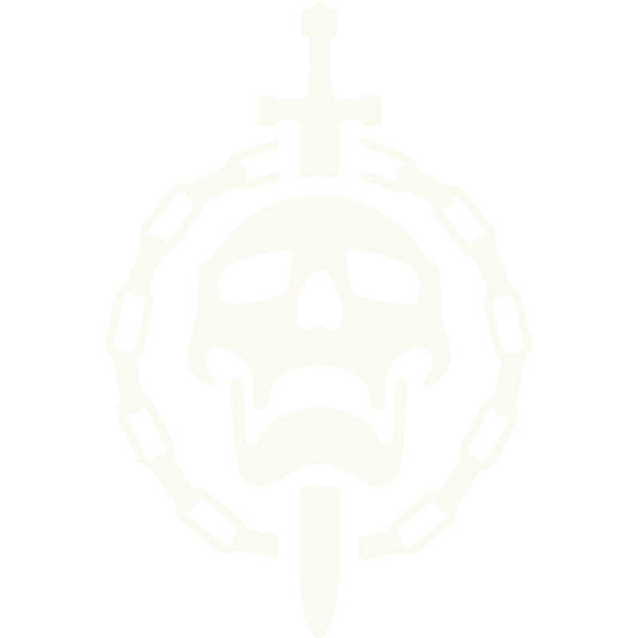
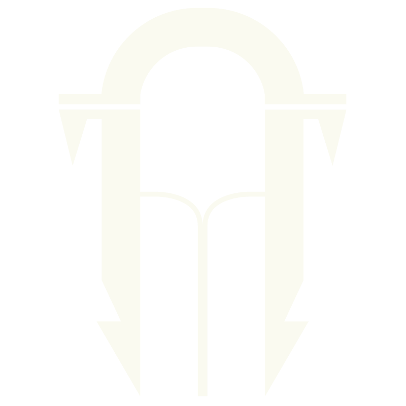
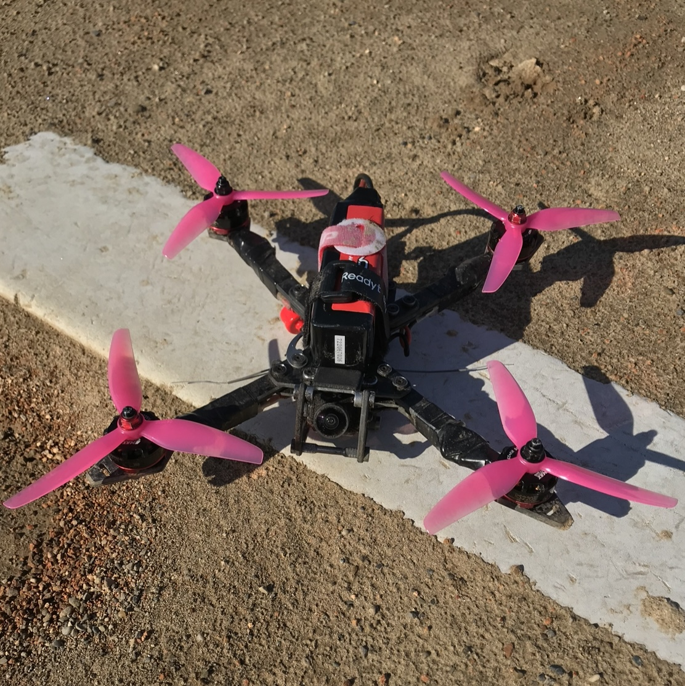
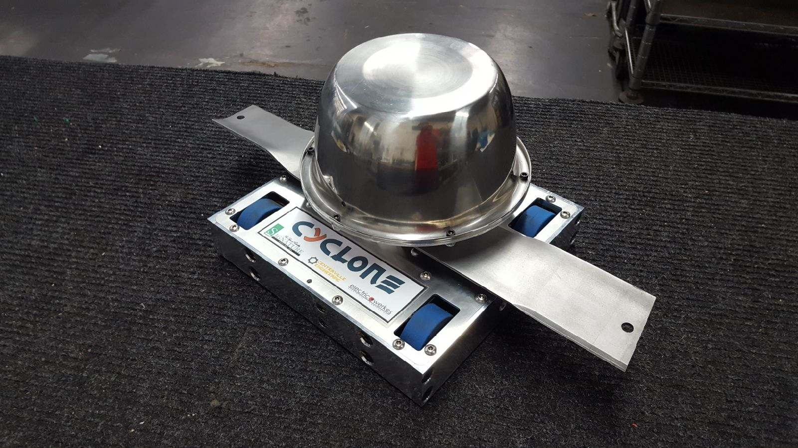

Our team partnered with a real-world client to deliver a fully functional CRM solution. After evaluating whether to build from scratch or leverage an existing platform, we chose to implement Twenty CRM and tailor it to the client's needs.
In my role as Infrastructure & DevOps Engineer, I was responsible for designing and deploying the system environment. This included provisioning a DigitalOcean VPS, configuring Ubuntu and Docker, and deploying Twenty using Docker Compose. I also built out the networking layer using Nginx as a reverse proxy to securely expose the application, integrated Certbot for automated SSL certificate management, and used Cloudflare for DNS and domain management.
To ensure reliability and maintainability, I developed shell scripts to automate database backups, restoration processes, and container restarts during updates. These backups were scheduled with cron jobs to run daily. Within Twenty, I implemented workflows to automate processes for our client's sales reps. One such workflow I configured uses a Google API call to find addresses of sales opportunities automatically. This project gave me hands-on experience with real-world deployment, automation, and infrastructure management, and strengthened my skills in DevOps practices and cloud-based environments.
Music Mood Classifier: 2026


8
The Music Mood Classifier is a cloud-based intelligent system that analyzes music input and returns a mood profile for that song. Users can enter song lyrics, a song title, or both, and the system will classify the mood and suggest activities the song is suited for. The system consists of a backend REST API and a simple frontend interface where users interact with the service.
Music is closely tied to how people feel and what they are doing day to day, but most tools for discovering Music focuses on genre rather than mood. This project aims to build a simple and fun tool that classifies a song's emotional mood and suggests activities that pair well with it, like studying, working out, or relaxing. The scope includes building the backend microservice, connecting it to a frontend, and deploying the full system to the cloud.
This project was completed for my Cloud Based Intelligent Application Development class, in collaboration with other students.
Jötunn Comparer: 2023 - 2024




Jötunn Comparer is an open-source project started by Connor Downs and myself. The project was incentive for us to learn the Python programming language and how to access APIs. We used the code we developed to access player data from the game Destiny 2 using the Bungie API. The website is hosted on github which does not allow Python scripts to run like JavaScript, forcing us to make a workaround. The method I came up with was using a Raspberry Pi as a server that would run the Python scripts to update the player data and push the data to the github repository. The update process was automated using cron jobs. This project gave me opportunity to learn Python, API requests, and Debian Linux.
Though development has paused and the server not currently running, the last version of the website can be found by clicking the title of this section. Plans are in place to develop Jötunn Catalyst, a new version to commemorate the end of Destiny 2.
Portfolio Website: 2023 - Present
This website was initially done as a project for my HTML and CSS class at Sinclair Community College. It was meant to be a show of my abilities with HTML and CSS that I learned during the semester. Every line of code was typed from scratch! In July 2026, I performed a major overhaul to show progress that I have made with my frontend design skills. I hope you enjoy!
Oxygen UAV: 2020 - present

This was second drone I custom built, and the one still operational today. I wanted to make a UAV that was more stable in flight and a bit more compact. Its frame is a 250mm 115g carbon fiber, with a unique mounting orientation. For my electronics stack I used a Rush Tank VTX, DALRC F405 AIO flight controller, and a dual-antenna Spektrum RX. My ESCs needed to be mounted on the frame arms (which were very thin), so I used four Flycolor 36A X Cross Slims and connected them to EMAX RS2205 2300KV motors which provided good torque and a design that actively cooled the motor coils. I've gone through several sets of propellers, but consistently have success with Ethix S5 tri-blades. My camera is currently a Foxeer Mini Predator, but may be replaced in the near future. Oxygen is built for 4s batteries, so it's not the fastest drone I've made but it's light and agile and very consistent.
I decided to go for a very unique designed frame that would maximize my stability by putting the center of mass both very close to the flight controller and close to the plane of the propellers. In order to meet these conditions, I picked a frame that mounted the battery at the level of the motors and would have my stack hang below that level. Normally the other way around, with the electronics stack inline with the motors and battery hanging below, this orientation required me to mount my stack upside-down relative to the motors. It took some playing around with Betaflight to make my flight controller believe it was right side up before it was working properly.
Cyclone Xtreme Bot: 2020

Cyclone is a 15-pound battlebot designed, built, tested, and battled by a team of four I was a part of for the Centerville High School engineering class. The whole project took about 11 months and $976 to complete. It uses a lawnmower blade as its weapon, providing it high durability and high flexibility and letting it manage hits very well. Cyclone was a test of our machining capabilities requiring use of mills, lathes, routers, wire EDMs, some manual and some CNC. The design process challenged our knowlegdge of CAD software and the engineering design process.
My contributions to the team began with my background in technical drawings. Once our parts began their design stages, I was able to make some of the drawings of the parts from the 3D model. The team decided to give me some of the more complicated drawings, while the more basic drawings were given to be done by the people who had less experience with making drawings. Over time, some prints needed to be changed and I would often check the drawings to make sure all necessary dimensions were measured to the proper accuracy and tolerance.
Soldering was another area I had some experience in while going into this project. I had, in the past, soldered small through-hole projects on my own. The soldering we had to do for our robot was a little different from the smaller circuits I worked on in the past. We needed to solder 14 AWG and 12 AWG wires together, attached to bullet connectors, and battery connectors. Soldering clean joints and keeping all connectors insulated with heat shrink is necessary to ensure the batteries, motors, ESCs and radio receiver didn't short out. I made it a priority to keep all exposed wires cleanly connected and wrapped.
The project resulted in our bot placing first place for high school teams and second place overall at the fall 2019 Xtreme BOTS tournament. I recently returned to the event to help the current Centerville High School teams with necessary repairs between fights.